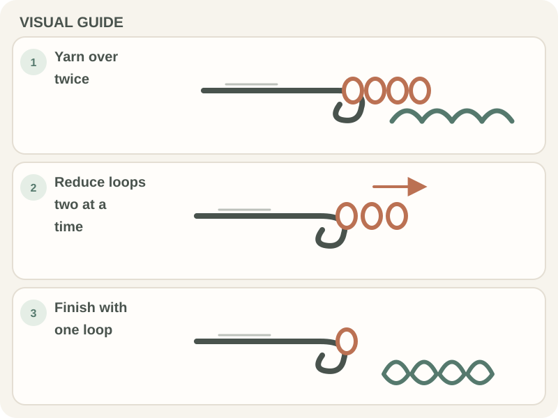

Stitches & Techniques · Beginner guide
How to Make a Treble Crochet Stitch
A US treble crochet uses two yarn-overs before insertion and three pull-throughs of two loops.

The treble’s extra height comes from starting with two yarn-overs. Keep the loops on the hook in order and work them off two at a time.
Before you begin
Use a short practice chain and the hook recommended by your yarn label or pattern. Confirm the pattern uses US terms: UK treble crochet is not the same stitch.
Step-by-step instructions
- Yarn over twice, then insert the hook in the target stitch.

A purple crochet hook draws yarn through loops to form a stitch. Photo by Castorly Stock via Pexels. - Yarn over and draw up a loop; four loops are now on the hook.
- Yarn over and pull through two loops. Three loops remain.
- Repeat the yarn-over and pull through two loops two more times, until one loop remains.

How to check your work
A finished treble has a tall post and one top V. There should be one active loop after the third pull-through; count the top V as one stitch.
Common beginner problems
- The post is much shorter than expected: Check that you made two yarn-overs before inserting the hook.
- Loops catch on the hook head: Rotate the hook opening down as you pass through two loops, then relax the active loops.
- The row count is off: Mark the edge stitches and check the pattern’s turning-chain rule.
Counting the loops
After drawing up the loop, count four loops on the hook. Each pull-through removes two; the sequence is four, three, two, then one.
Frequently asked questions
What does tr mean?
In a US pattern, tr means treble crochet. In a UK pattern, tr usually means a different stitch, so check the pattern’s key.
How many yarn-overs start a US treble?
Two, before inserting the hook.
How many times do I pull through two loops?
Three times, leaving one active loop.